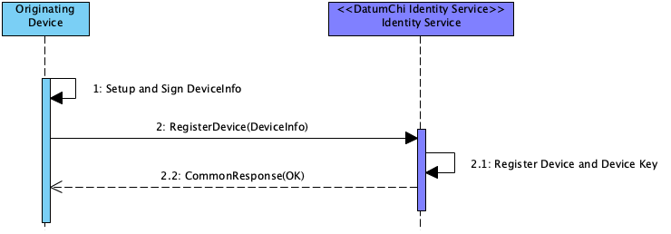

Registering a Device¶
Device registration allows for devices, or components outside of the scope of the DatumChi Protocol but utilize the DatumChi Protocol to create and manage collaborations, to register themselves with a Domain Identity Service for actions on that domain.
Step |
Description |
|---|---|
1 |
Device creates a DeviceInfo data structure and applies any necessary signatures |
2 |
Device calls the RegisterDevice protocol message on the DatumChi Identity Service, passing in DeviceInfo data structure |
2.1 |
The Identity services verifies the DeviceInfo, ensures no duplicate device key registered, and stores the info |
2.2 |
On success, the Identity Service returns a CommonResponse data structure with an OK status |